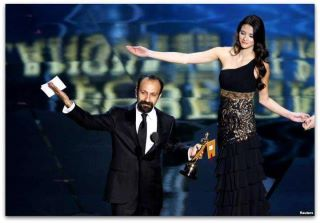

|
|

جایزه ای ورای اسکار، رخشان بنی اعتماد
دو شنبه8 اسفند 1390

تغییر برای برابری -
یادداشت رخشان بنی اعتماد پس ازدریافت جایزه اسکار توسط اصغر فرهادی:
اصغر فرهادی اولین جایزه اسکاررا برای سینمای ایران گرفت. اما افتخاری بالاتر از یک جایزه به ملت داد. کاش زمانی که این جایزه در موزه سینمای ایران جای می گیرد، برای ثبت در تاریخ، گفته های اصغرفرهادی کنار آن نوشته شود. نوشته شود تا بازخوانی شود و به یادها سپرده شود که در زمانه واهمه های پنهان از واژه های تحریم و تهدید و جنک، در سحرگاه امروز8 اسفند ماه 1390، سینمای ایران توانست با زبان هنر،پبام صلح خواهی ملت خود را به جهان اعلام کند.
رخشان بنی اعتماد